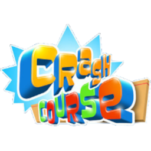

 Doritos Crash Course
Details
 |
|
| Playtime | Not Played |
| Last Activity | 5/1/2015 23:37:58 |
| Added | 4/24/2025 1:30:35 |
| Modified | 4/30/2025 2:42:27 |
| Completion Status | Not Played |
| Library | Xbox |
| Source | Xbox |
| Platform | Microsoft Xbox 360 |
| Release Date | 12/8/2010 |
| Community Score | 88 |
| Critic Score | 74 |
| User Score | |
| Genre | Platform |
| Developer | Behaviour Interactive Wanako Games |
| Publisher | Microsoft Game Studios |
| Feature | Multiplayer Single Player |
| Links | Wikipedia Official website MobyGames |
| Tag | |
Description
Doritos Crash Course (formerly titled as Avatar Crash Course) is a 3D sidescrolling platforming advergame developed by Wanako Games for the Xbox 360. It was released for free as one of the finalists of the "Unlock Xbox" competition sponsored by Doritos, alongside Harms Way. The concept for the game was designed by Jill Robertson from Raleigh, North Carolina, inspired by Japanese game shows such as Sasuke. On December 29, 2010, the game was announced the winner of the second "Unlock Xbox" competition.
A Windows 8 version of the game, Doritos Crash Course Go!, was briefly available on the Microsoft Store, but has since been delisted.
Gameplay
In Doritos Crash Course, the players have to get their Xbox 360 avatars through increasingly difficult obstacle courses before the time runs out. Each course has a various number of checkpoints scattered throughout. If the avatar falls off the course, the game will begin from the last passed checkpoint. The game is composed of three locations (United States, Europe, and Japan), each having five levels. Some of the obstacles include collapsing floors, swinging ropes, chains, and water balloons.
Reception
The game received above-average reviews according to the review aggregation website Metacritic.
Since its release, the game sold 1,449,359 units worldwide by January 2011. Sales of the game moved up to 4,222,820 units by the end of 2011.
Downloadable content
On January 2, 2013, the "City Lights" DLC was made available for $1.99 (USD). The pack contains fifteen levels spanning Las Vegas and London, along with the new versions of the levels set in Japan from the original game.
Sequel
On May 8, 2013, the sequel named Doritos Crash Course 2 was released for free on Xbox Live Arcade. Similar to the first game, avatars controlled by the players will participate in obstacle courses. Leaderboards allow competitions with friends online, where up to four players can in local multiplayer. The game brings out 4 new worlds (Amazon, Antarctic, Egypt, and Pirate Island) with five courses each. Unlike in Doritos Crash Course, players must collect stars, which are used to unlock levels, buy power-ups and effects that change avatars' appearance in-game.
On April 24, 2014, the game was removed from Xbox Live Arcade following an announcement of closure one week prior, on April 17.
The game is still downloadable for free on the Xbox's Microsoft Store, through Xbox 360 backwards compatibility on Xbox One and newer.